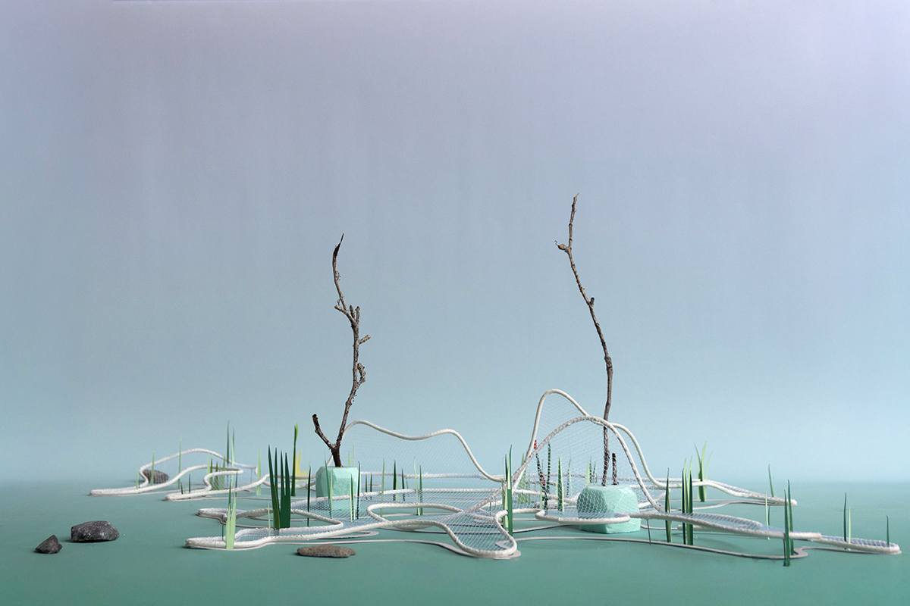
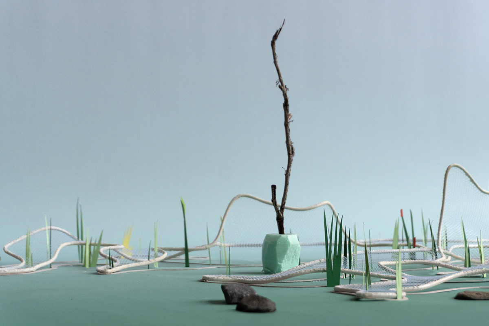
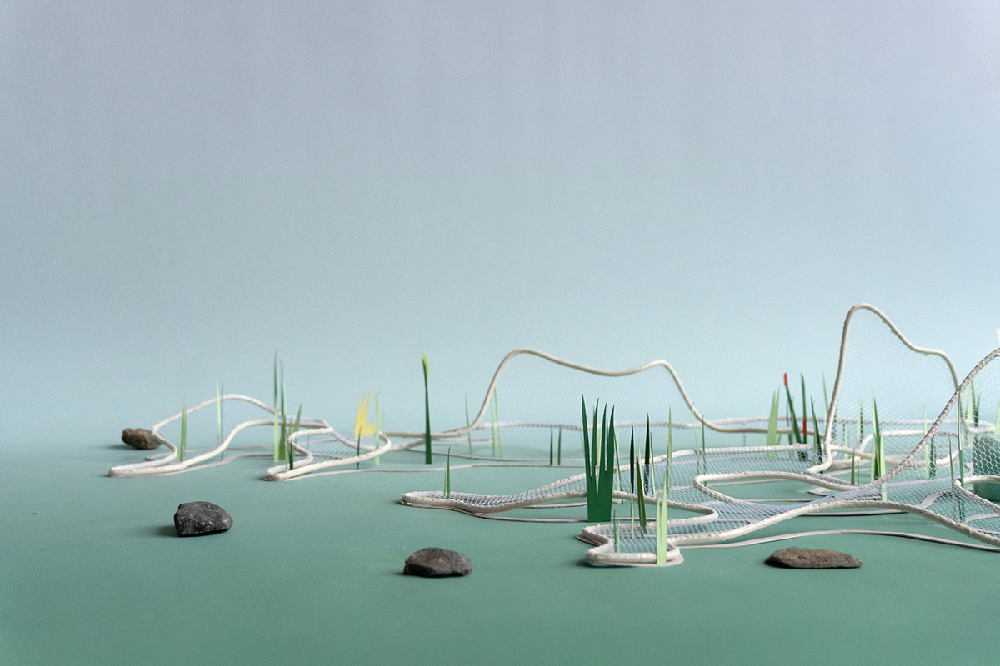
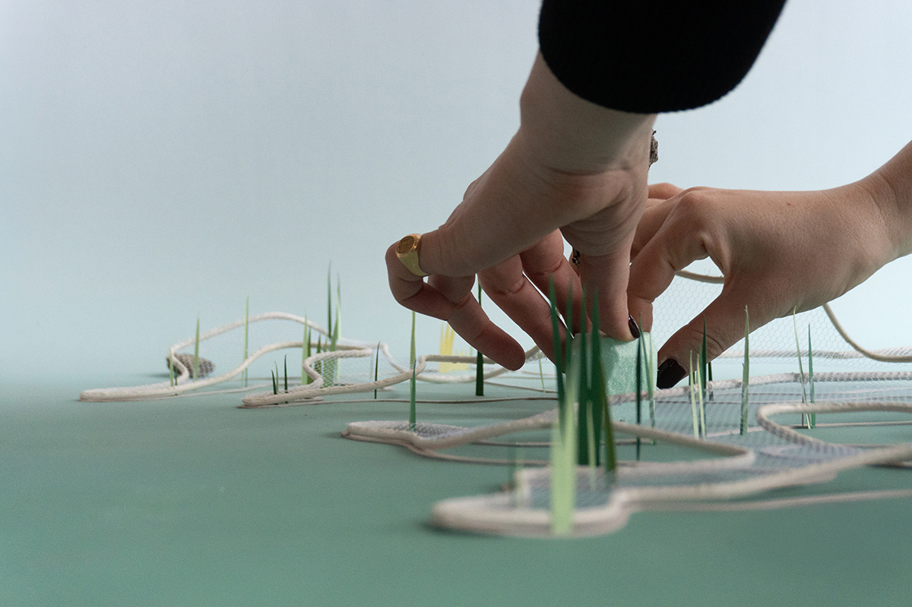
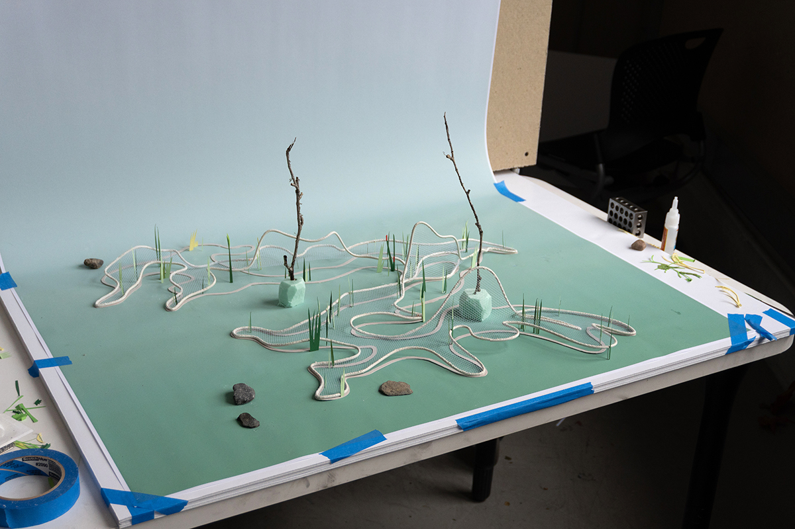

The Moving Mountain translates the geology of Seoul into a lightweight and atmospheric garden installation which provides habitat for people, plants, and animals alike. The design cuts out a portion of the ground plane and elevates it, inviting the earth to move along an irregularly curving aluminum rail. This lifted profile reaches three distinct heights: valleys that touch the ground, plateaus at bench height, and peaks that climb 2.7 meters. Within this framework, a cable net system invites collaborations between architecture, plants, and humans—visitors sit upon it, vines climb through it, and plants root and grow within it, transforming the installation over time from a metal frame into a living mountain. The choice of lightweight yet structurally robust materials reflects a commitment to transparency and porosity, designed simultaneously for human experience and as habitat for Seoul’s non-human residents. Six species of native perennial plants populate the ground plane, selected to provide nectar for pollinators, seeds for migratory birds, and cover for ground-dwelling invertebrates.



